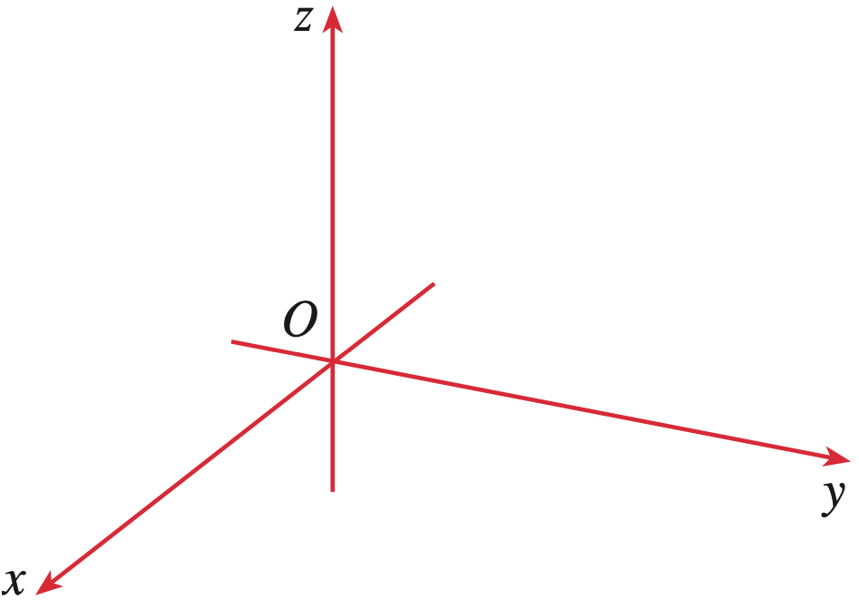 (a) Coordinate Axes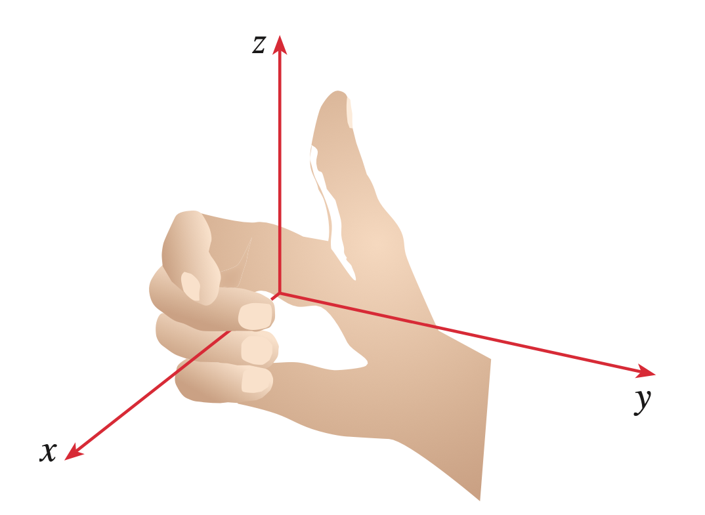 (b) Right Hand Rule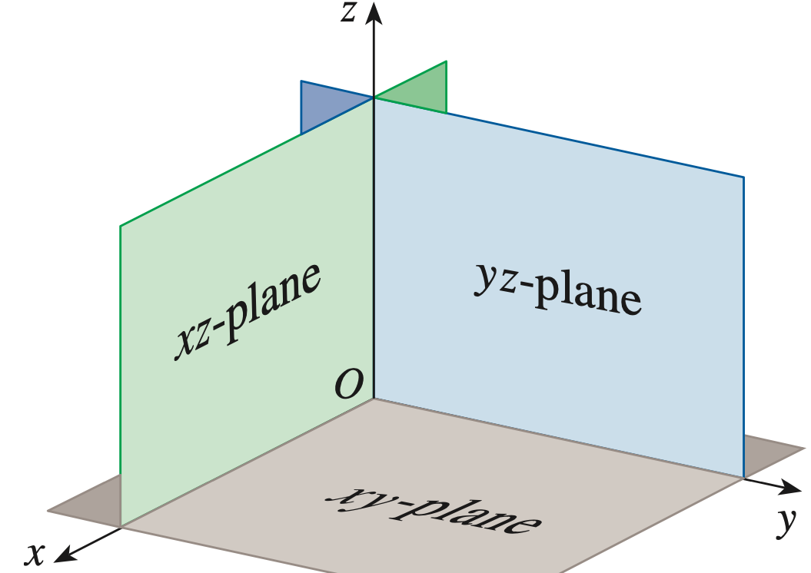 (c) Coordinate Planes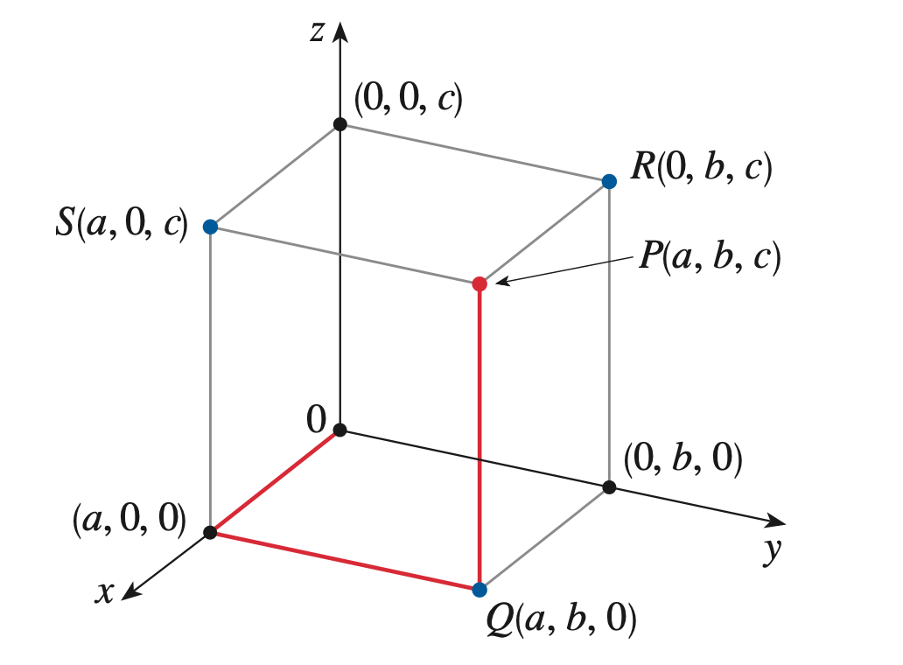 (d) Coordinates
Distance Formula in Three Dimensions: The distance \(|P_1P_2|\) between the points \(P_1(x_1, y_1, z_1)\) and \(P_2(x_2, y_2, z_2)\) in \(\mathbb {R}^3\) is \[ |P_1P_2| = \sqrt {(x_2-x_1)^2+(y_2-y_1)^2+(z_2-z_1)^2} \]
Equation of a Sphere: The equation of a sphere with center \(C(h,k,l)\) and radius \(r>0\) in \(\mathbb {R}^3\) is \[ (x-h)^2+(y-k)^2+(z-l)^2 = r^2\]

We call real numbers scalars to differentiate them from vectors. A vector \(\mathbf {v}\) is the data of a scalar magnitude (or length) \(|\mathbf {v}|\) and a direction in space, notated geometrically as an arrow.
The zero vector \(\bf 0\) is the unique vector with length zero. It has no direction.
We add two vectors \(\mathbf {u}\) and \(\mathbf {v}\) by positioning them tip to tail. The sum \(\mathbf {u}+\mathbf {v}\) is the vector drawn from the tail of \(\mathbf {u}\) to the tip of \(\mathbf {v}\).
For any scalar \(c\in \mathbb {R}\) and any vector \(\mathbf {v}\) we can multiply \(c\mathbf {v}\) to produce the vector of length \(c|\mathbf {v}|\) in:
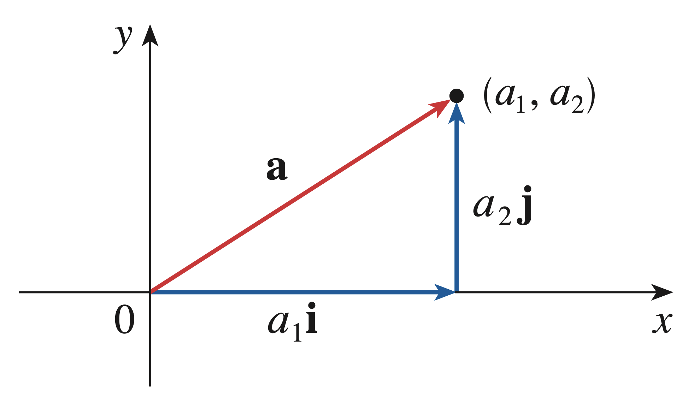 (a) \({\bf a} = a_1 {\bf i} + a_2{\bf j}\) 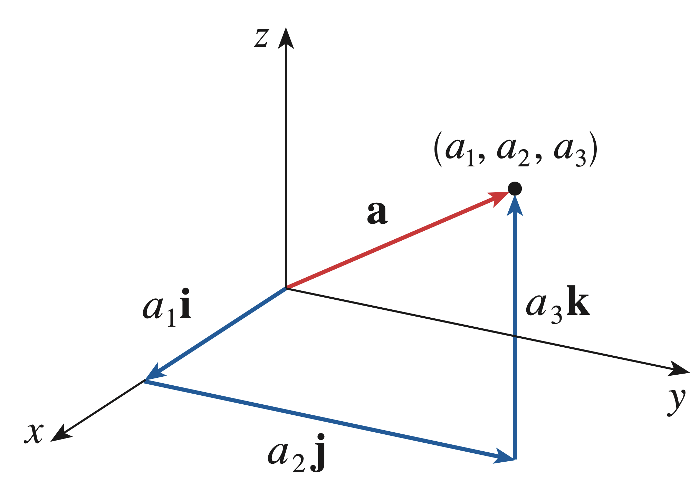 (b) \({\bf a} = a_1 {\bf i} + a_2{\bf j}+ a_3{\bf k}\)
Properties of Vectors: If \(\mathbf {a}\), \(\mathbf {b}\), and \(\mathbf {c}\) are vectors and \(c\) and \(d\) are scalars, then
\(\mathbf {a}+\mathbf {b} = \mathbf {b}+\mathbf {a}\)
\(\mathbf {a}+(\mathbf {b}+\mathbf {c}) = (\mathbf {a}+\mathbf {b})+\mathbf {c}\)
\(\mathbf {a}+{\bf 0} = \mathbf {a}\)
\(\mathbf {a}+(-\mathbf {a}) = {\bf 0}\)
\(c(\mathbf {a}+\mathbf {b}) = c\mathbf {a}+c\mathbf {b}\)
\((c+d)\mathbf {a} = c\mathbf {a}+d\mathbf {a}\)
\((cd)\mathbf {a} = c(d\mathbf {a})\)
\(1\mathbf {a} = \mathbf {a}\)
A unit vector is a vector with length 1.
Notice, the three standard basis vectors \(\mathbf {i}\), \(\mathbf {j}\), and \(\mathbf {k}\) are all unit vectors.
Given any nonzero vector \(\mathbf {v}\), we can always form the unit vector in the same direction as \(\mathbf {v}\) by taking the scalar multiple \[\mathbf {u} = \frac {1}{|\mathbf {v}|}\mathbf {v} \]
Properties of the Dot Product: If \(\mathbf {a}\), \(\mathbf {b}\), and \(\mathbf {c}\) are vectors and \(c\) is a scalar, then
\(\mathbf {a}\cdot \mathbf {a} = |\mathbf {a}|^2\)
\(\mathbf {a}\cdot \mathbf {b} = \mathbf {b}\cdot \mathbf {a}\)
\(\mathbf {a}\cdot (\mathbf {b}+\mathbf {c}) = \mathbf {a}\cdot \mathbf {b} + \mathbf {a} \cdot \mathbf {c}\)
\((c\mathbf {a})\cdot \mathbf {b} = c(\mathbf {a}\cdot \mathbf {b}) = \mathbf {a}\cdot (c\mathbf {b})\)
\({\bf 0}\cdot \mathbf {a} = 0\)
If \(\theta \) is the angle between the vectors \(\mathbf {a}\) and \(\mathbf {b}\), then \[ \mathbf {a}\cdot \mathbf {b} = |\mathbf {a}||\mathbf {b}|\cos \theta \] rearranging gives: \( \cos \theta = \frac {\mathbf {a}\cdot \mathbf {b}}{|\mathbf {a}||\mathbf {b}|} \)
Two vectors \(\mathbf {a}\) and \(\mathbf {b}\) are orthogonal if and only if \(\mathbf {a}\cdot \mathbf {b} = 0\)
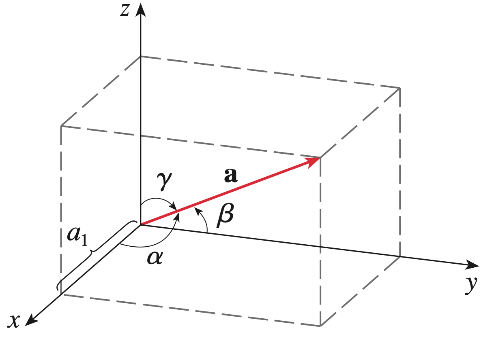
The vector projection of \(\mathbf {b}\) onto \(\mathbf {a}\) is given by the formula \[\text {proj}_{\mathbf {a}}{\mathbf {b}} = \frac {\mathbf {a}\cdot \mathbf {b}}{|\mathbf {a}|^2}\mathbf {a} \]
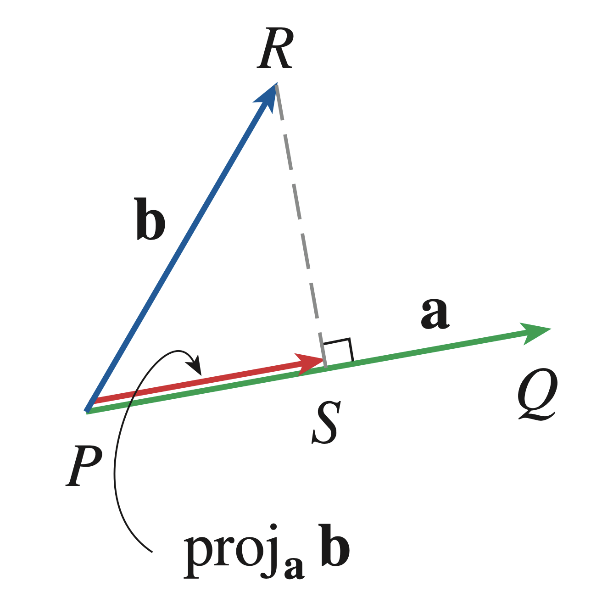 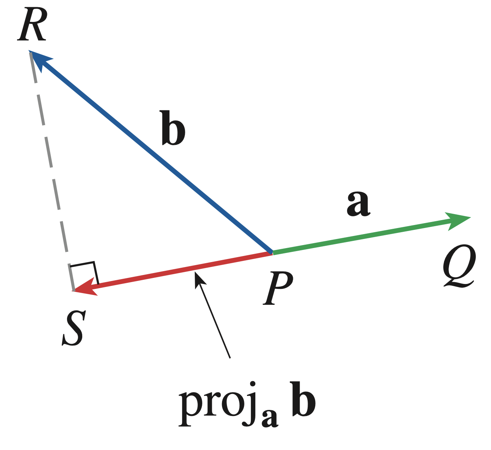
The scalar projection of \(\mathbf {b}\) onto \(\mathbf {a}\) is just the length of the vector projection and is given by the formula \[\text {comp}_{\mathbf {a}}{\mathbf {b}} = \frac {\mathbf {a}\cdot \mathbf {b}}{|\mathbf {a}|} \]
If \(\mathbf {a} = \langle a_1, a_2, a_3 \rangle \) and \(\mathbf {b} = \langle b_1, b_2, b_3 \rangle \), then the cross product of \(\mathbf {a}\) and \(\mathbf {b}\) is the vector
\[\mathbf {a}\times \mathbf {b} = \left | \begin {matrix} \mathbf {i} & \mathbf {j} & \mathbf {k}\\ a_1 & a_2 & a_3\\ b_1 & b_2 & b_3\\ \end {matrix} \right | = \langle a_2b_3-a_3b_2, a_3b_1-a_1b_3, a_1b_2-a_2b_1\rangle \]
Recall that two vectors are othogonal if and only if their dot product is zero.
The cross product \(\mathbf {a}\times \mathbf {b}\) is, by construction, always orthogonal to both \(\mathbf {a}\) and \(\mathbf {b}\). Its direction is determined by the right hand rule.
If \(\theta \) is the angle between \(\mathbf {a}\) and \(\mathbf {b}\) (so \(0\leq \theta \leq \pi \)), then the length of the cross product \(\mathbf {a}\times \mathbf {b}\) is given by the formula: \[ |\mathbf {a}\times \mathbf {b}| = |a||b|\sin \theta \]
Two nonzero vectors \(\mathbf {a}\) and \(\mathbf {b}\) are parallel if and only if \(\mathbf {a}\times \mathbf {b} = {\bf 0}\).
The length of the cross product \(\mathbf {a}\times \mathbf {b}\) is equal to the area of the parallelogram determined by \(\mathbf {a}\) and \(\mathbf {b}\).
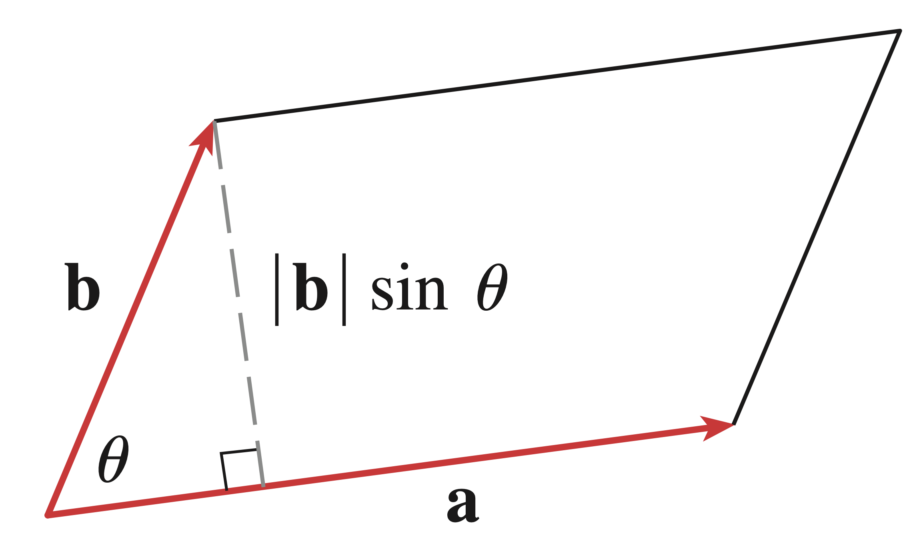
Cross product is NOT commutative. Cross product is NOT associative. Here are some other properties that do hold.
Properties of the Cross Product: If \(\mathbf {a}\), \(\mathbf {b}\), and \(\mathbf {c}\) are vectors and \(c\) is a scalar, then
\(\mathbf {a}\times \mathbf {b} = -(\mathbf {b}\times \mathbf {a})\)
\((c\mathbf {a})\times \mathbf {b} = c(\mathbf {a}\times \mathbf {b}) =\mathbf {a}\times (c\mathbf {b}) \)
\(\mathbf {a}\times (\mathbf {b}+\mathbf {c}) = \mathbf {a}\times \mathbf {b} + \mathbf {a}\times \mathbf {c}\)
\((\mathbf {a}+\mathbf {b})\times \mathbf {c} = \mathbf {a}\times \mathbf {c}+\mathbf {b}\times \mathbf {c}\)
\(\mathbf {a}\cdot (\mathbf {b}\times \mathbf {c}) = (\mathbf {a}\times \mathbf {b})\cdot \mathbf {c}\)
\(\mathbf {a}\times (\mathbf {b}\times \mathbf {c}) = (\mathbf {a}\cdot \mathbf {c})\mathbf {b} - (\mathbf {a}\cdot \mathbf {b})\mathbf {c}\)
\begin {align*} \mathbf {i}\times \mathbf {j} = \mathbf {k} && \mathbf {j}\times \mathbf {k} = \mathbf {i} && \mathbf {k}\times \mathbf {i}=\mathbf {j}\\ \mathbf {j}\times \mathbf {i} = -\mathbf {k} && \mathbf {k}\times \mathbf {j} = -\mathbf {i} && \mathbf {i}\times \mathbf {k}=-\mathbf {j}\\ \end {align*}
Let \(P_0(x_0, y_0, z_0)\) be a point in space and \(\mathbf {r}_0 = \overrightarrow {OP_0} = \langle x_0, y_0, z_0 \rangle \) its corresponding position vector.
Let \(\mathbf {v}=\langle a,b,c\rangle \) be a nonzero vector (our direction vector).
The vector equation of the line \(L\) through the point \(P_0\), parallel to \(\mathbf {v}\), is \[\langle x,y,z\rangle = \mathbf {r}_0 + t\mathbf {v} = \langle x_0+ta, y_0+tb, z_0+tc \rangle \]
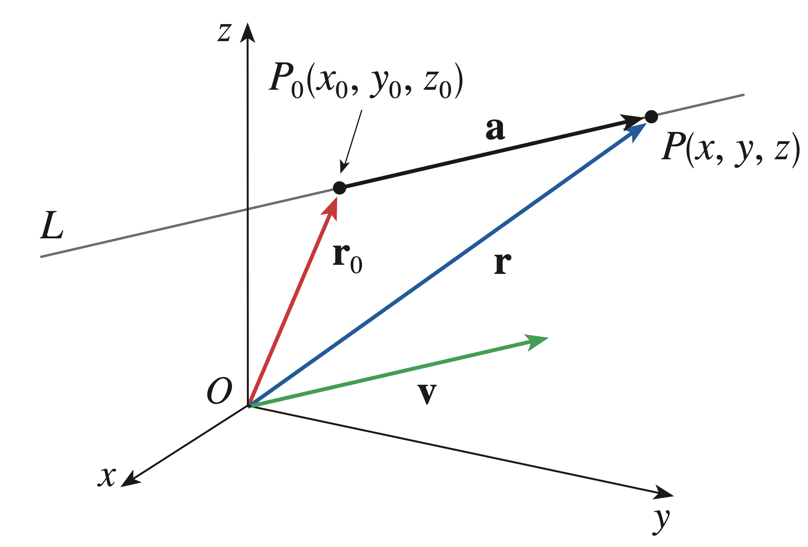
Equating the components of the vector equation \[\langle x,y,z\rangle = \mathbf {r}_0 + t\mathbf {v} = \langle x_0+ta, y_0+tb, z_0+tc \rangle \] gives the parametric equations of the line \(L\): \begin {align*} x= x_0+ta\\ y=y_0+tb\\ z=z_0+tc \end {align*}
Solving these for \(t\) and equating give the symmetric equations of the line \(L\): \[\frac {x-x_0}{a}=\frac {y-y_0}{b}=\frac {z-z_0}{c}\]
Let \(P_0(x_0, y_0, z_0)\) be a point in space and \(\mathbf {r}_0 = \overrightarrow {OP_0} = \langle x_0, y_0, z_0 \rangle \) its corresponding position vector.
Let \(\mathbf {n}=\langle a,b,c\rangle \) be a nonzero vector (our normal vector).
The equation of the plane \(Q\) through the point \(P_0\), orthogonal to \(\mathbf {n}\), is given by \[\mathbf {n} \cdot (\mathbf {r}-\mathbf {r}_0) = 0 \]
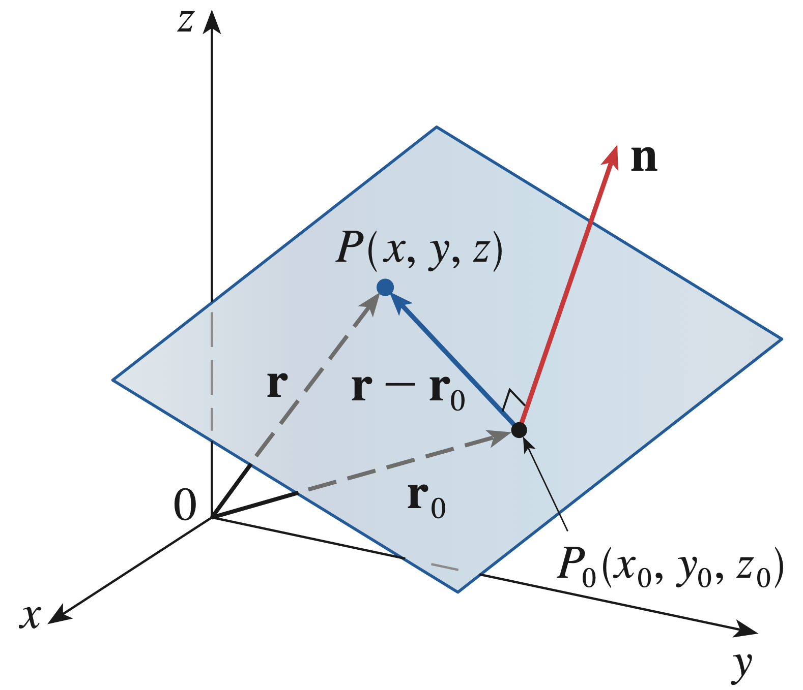
We often rewrite \[\mathbf {n} \cdot (\mathbf {r}-\mathbf {r}_0) = 0 \] to look like this: \[\mathbf {n} \cdot \mathbf {r} = \mathbf {n}\cdot \mathbf {r}_0 \] In either form it is called the vector equation of the plane \(Q\). If we expand the dot products and set \(d=ax_0+by_0+cz_0\), the resulting forms are \[a(x-x_0)+b(y-y_0)+c(z-z_0) = 0 \] and \[ax+by+cz= d \] The first is called the scalar equation of the plane, the second is called the linear equation of the plane.
Two planes are parallel if and only if their normal vectors are parallel.
A cylinder is a surface that consists of all lines (called rulings) that are parallel to a given line and pass through a given plane curve.
The classic example is when the plane curve is a circle.

A quadric surface is the graph of a second-degree (quadratic) equation in three variables \(x\), \(y\), and \(z\).

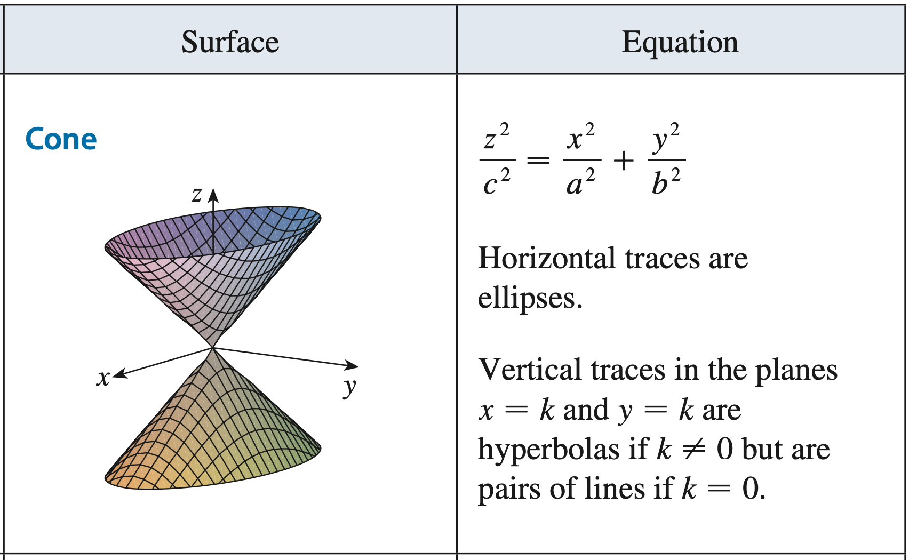

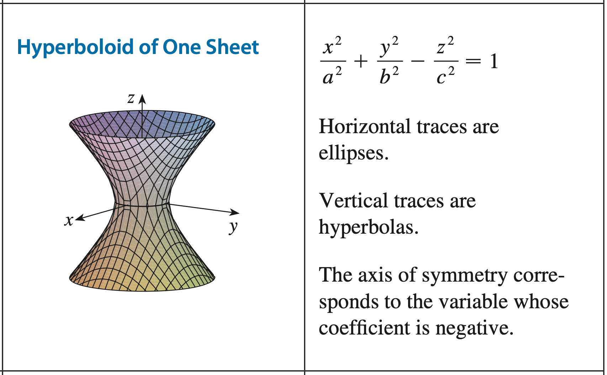
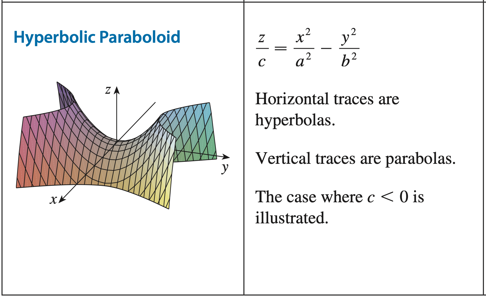
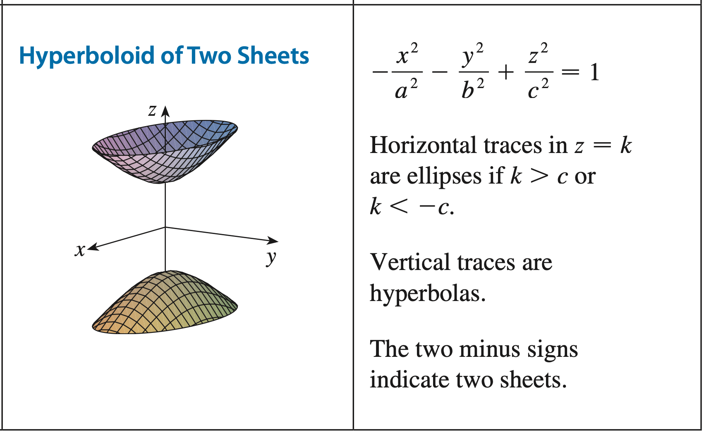
A vector-valued function (or vector function) is a function whose domain is a subset of the real numbers and whose range is a set of vectors. In three dimensions, this usually looks like a function \(\mathbf {r}:\mathbb {R}\longrightarrow \mathbb {R}^3\) with \(t\) our real variable giving an expression: \[\mathbf {r}(t) = \langle f(t), g(t), h(t)\rangle \] or in \(\mathbf {i}\), \(\mathbf {j}\), \(\mathbf {k}\) notation \[\mathbf {r}(t) = f(t)\mathbf {i}+g(t)\mathbf {j}+h(t)\mathbf {k}.\]
The real-valued functions \(f(t), g(t),\) and \(h(t)\) are called the coordinate functions of the vector-valued function \(\mathbf {r}\).
The limit of a vector function \(\mathbf {r}(t)= \langle f(t), g(t), h(t)\rangle \) is defined by taking the limits of its component functions, component by component. Meaning, for \(a\in \mathbb {R}\): \[\lim _{t\to a} \mathbf {r}(t) = \left \langle \lim _{t\to a}f(t), \lim _{t\to a}g(t), \lim _{t\to a}h(t)\right \rangle \] provided the limits of the component functions exist.
A vector function \(\mathbf {r}\) is continuous at \(a\) if and only if \[\lim _{t\to a} \mathbf {r}(t) = \mathbf {r}(a)\]
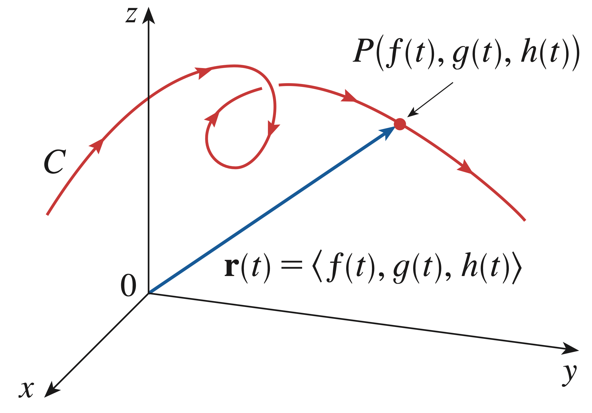
The derivative of a vector function \(\mathbf {r}(t)= \langle f(t), g(t), h(t)\rangle \) is defined by taking the usual limit for a derivative, but in vector form. Meaning the derivative of \(\mathbf {r}\) is given by \[\frac {d\mathbf {r}}{dt} = \mathbf {r}'(t) = \lim _{h\to 0}\frac {\mathbf {r}(t+h)-\mathbf {r}(t)}{h}\] if this limit exists. Let \(C\) be a space curve defined by a vector function \(\mathbf {r}\). If \(P\) is a point on \(C\) given by position vector \(\mathbf {r}(t)\), then the vector \(\mathbf {r}'(t)\) produced by taking the derivative gives the tangent vector to the curve at \(P\).
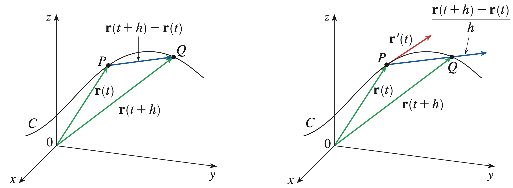
We can think of \(P\) as a particle in space traveling along the path \(C\) with it’s position at time \(t\) given by \(\mathbf {r}(t)\), in which case the vector \(\mathbf {r}'(t)\) is the velocity vector of the particle.
Theorem. The derivative of a vector function \(\mathbf {r}(t)= \langle f(t), g(t), h(t)\rangle \), (when \(f, g,\) and \(h\) are differentiable functions), is given by \[\mathbf {r}'(t) = \langle f'(t), g'(t), h'(t)\rangle \]
Suppose \(\mathbf {u}(t)\) and \(\mathbf {v}(t)\) are differentiable vector functions, \(c\) is a scalar, and \(f\) is a real-valued function. Then
\(\frac {d}{dt} [\mathbf {u}(t)+\mathbf {v}(t)] =\mathbf {u}'(t)+\mathbf {v}'(t)\)
\(\frac {d}{dt} [c\mathbf {u}(t)] = c\mathbf {u}'(t)\)
\(\frac {d}{dt} [f(t)\mathbf {u}(t)] = f'(t)\mathbf {u}(t)+f(t)\mathbf {u}'(t)\)
\(\frac {d}{dt} [\mathbf {u}(t)\cdot \mathbf {v}(t)] = \mathbf {u}'(t)\cdot \mathbf {v}(t)+\mathbf {u}(t)\cdot \mathbf {v}'(t)\)
\(\frac {d}{dt} [\mathbf {u}(t)\times \mathbf {v}(t)] = \mathbf {u}'(t)\times \mathbf {v}(t)+\mathbf {u}(t)\times \mathbf {v}'(t)\)
\(\frac {d}{dt} [\mathbf {u}(f(t))] = f'(t)\mathbf {u}'(f(t))\)
Theorem. If \(|\mathbf {r}(t)| = c\) is constant as \(t\) varies, then \(\mathbf {r}'(t)\) is orthogonal to \(\mathbf {r}(t)\) for all \(t\).

Because the theory of limits goes through so nicely for vector functions, we can just as easily develop integration in this setting. The punchline is, for \(\mathbf {r}(t)= \langle f(t), g(t), h(t)\rangle \) a continuous vector function: \[\int _a^b \mathbf {r}(t)\,\,dt = \left \langle \int _a^b f(t)\,\,dt, \int _a^b g(t)\,\,dt, \int _a^b h(t)\,\,dt \right \rangle \]